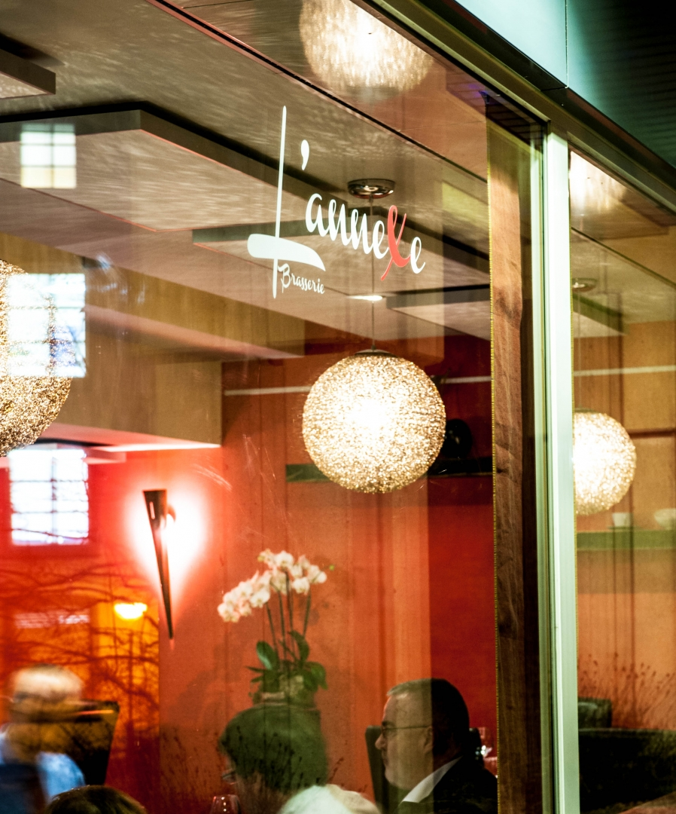

La Maison
Un nouveau chapitre pour L'Annexe.
Niché en plein cœur de Luxembourg-Ville, à deux pas de la Cité Judiciaire, L'Annexe vous accueille dans une atmosphère chaleureuse et détendue. Le midi, la carte célèbre les grands classiques de la brasserie revisités ; le soir, la cuisine s'ouvre sur un voyage gastronomique signé par le chef Peter Peerapong, accompagné des desserts créatifs du pâtissier Dorian Molina. Dès les beaux jours, la grande terrasse dévoile un panorama exceptionnel sur le Grund.
Lauréate du Prix du Public Explorator 2018, L'Annexe entame depuis janvier 2026 un nouveau chapitre sous la direction de Kim Mathekowitsch et Jörg Flohr.
✦ Prix du Public Explorator 2018 — Meilleur restaurant français